Soru 1Cevap: D
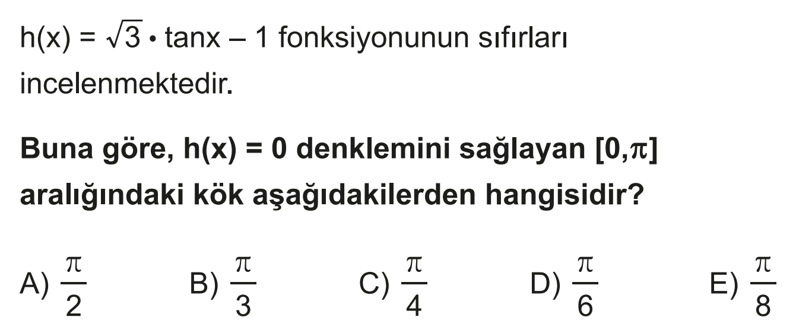
Çözüm
- $\sqrt3\tan x - 1 = 0$ → $\tan x = \frac{1}{\sqrt3}$.
- $\tan\frac{\pi}{6} = \frac{\sqrt3}{3}$.
- $[0,\pi]$'de kök $\frac{\pi}{6}$.
Cevap: D
Soru 2Cevap: A
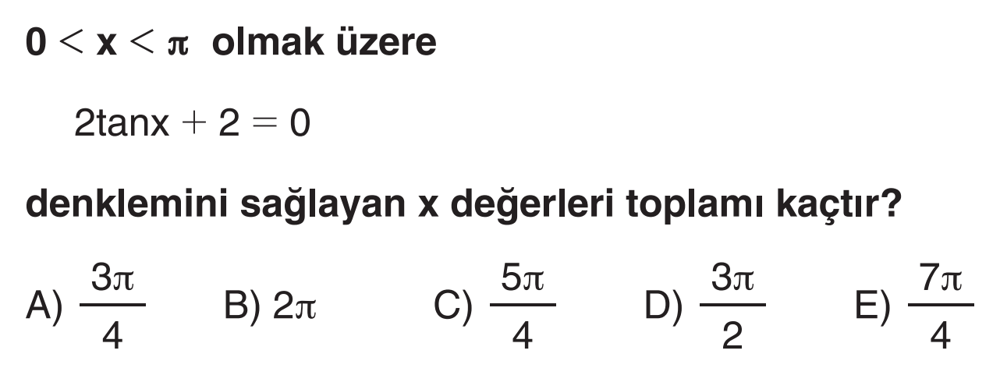
Çözüm
- $2\tan x + 2 = 0$ → $\tan x = -1$.
- $(0,\pi)$'de tanjant II. bölgede negatif.
- $x = \frac{3\pi}{4}$ (tek kök) → toplam $\frac{3\pi}{4}$.
Cevap: A
Soru 3Cevap: A
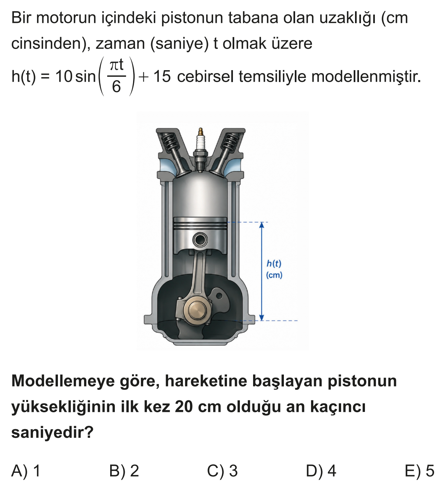
Çözüm
- $10\sin\frac{\pi t}{6} + 15 = 20$ → $\sin\frac{\pi t}{6} = \frac12$.
- İlk kez: $\frac{\pi t}{6} = \frac{\pi}{6}$.
- $t = 1$ saniye.
Cevap: A
Soru 4Cevap: C
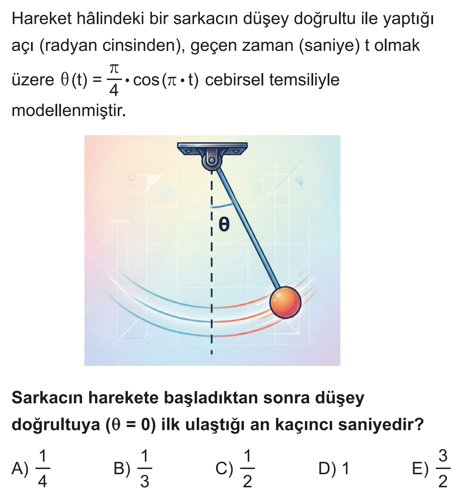
Çözüm
- $\theta(t) = 0$ → $\cos(\pi t) = 0$.
- İlk pozitif çözüm $\pi t = \frac{\pi}{2}$.
- $t = \frac12$ saniye.
Cevap: C
Soru 5Cevap: E
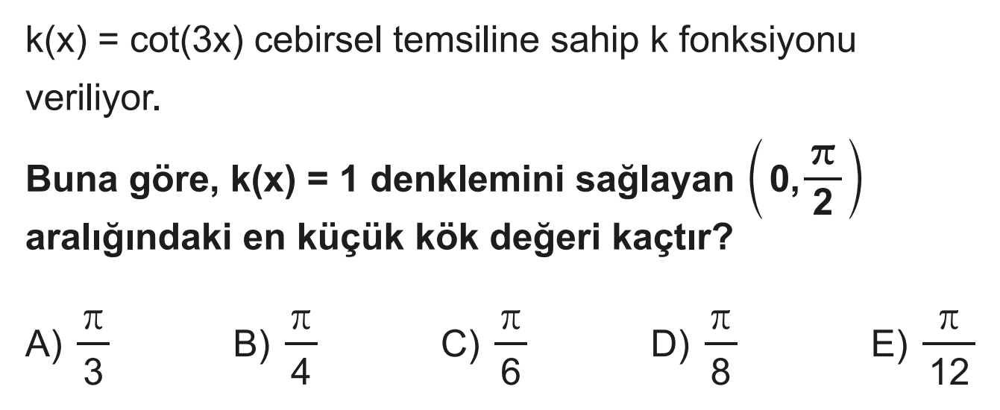
Çözüm
- $\cot3x = 1$ → $3x = \frac{\pi}{4} + k\pi$.
- $x = \frac{\pi}{12} + \frac{k\pi}{3}$.
- $\left(0,\frac{\pi}{2}\right)$'de en küçük kök $\frac{\pi}{12}$.
Cevap: E
Soru 6Cevap: B
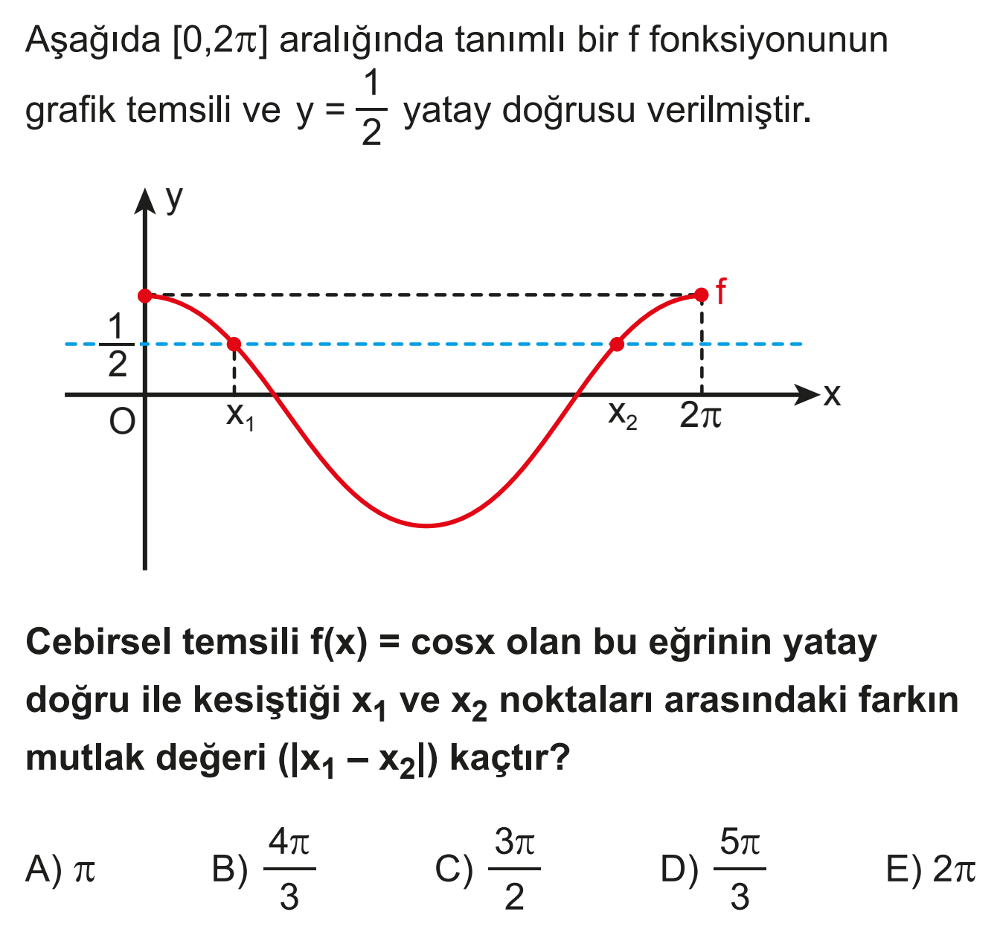
Çözüm
- $\cos x = \frac12$ → $x_1 = \frac{\pi}{3}$.
- $x_2 = 2\pi - \frac{\pi}{3} = \frac{5\pi}{3}$.
- $|x_1 - x_2| = \frac{4\pi}{3}$.
Cevap: B
Soru 7Cevap: D
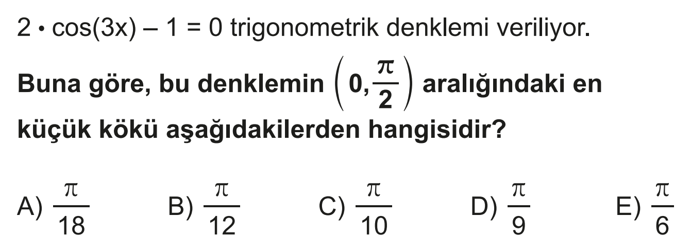
Çözüm
- $\cos3x = \frac12$ → $3x = \pm\frac{\pi}{3} + 2k\pi$.
- $x\in\left(0,\frac{\pi}{2}\right)$ ise $3x\in\left(0,\frac{3\pi}{2}\right)$ → $3x = \frac{\pi}{3}$ en küçük.
- $x = \frac{\pi}{9}$.
Cevap: D
Soru 8Cevap: E
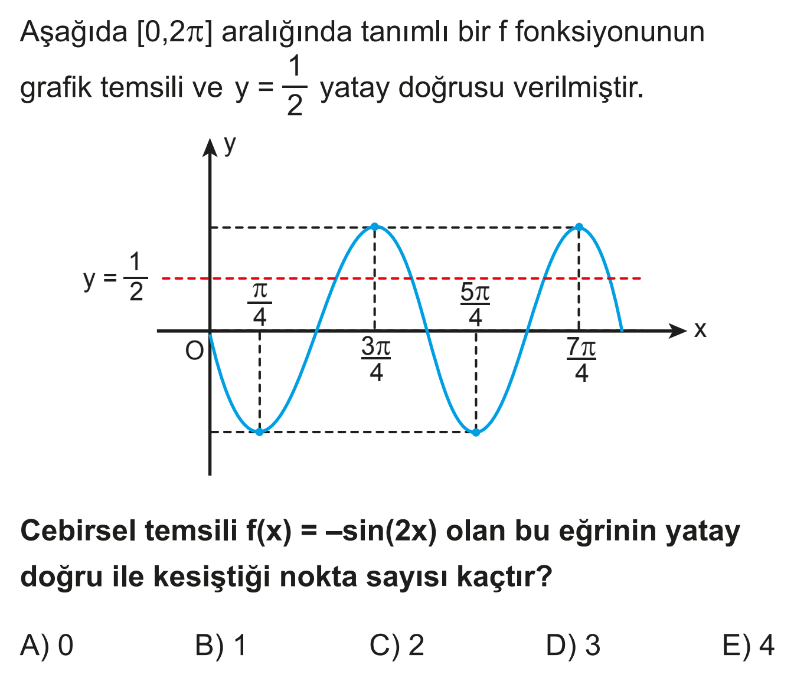
Çözüm
- $-\sin2x = \frac12$ → $\sin2x = -\frac12$.
- $x\in[0,2\pi]$ ise $2x\in[0,4\pi]$: $2x = \frac{7\pi}{6}, \frac{11\pi}{6}, \frac{19\pi}{6}, \frac{23\pi}{6}$.
- 4 kesişim noktası.
Cevap: E
Soru 9Cevap: D
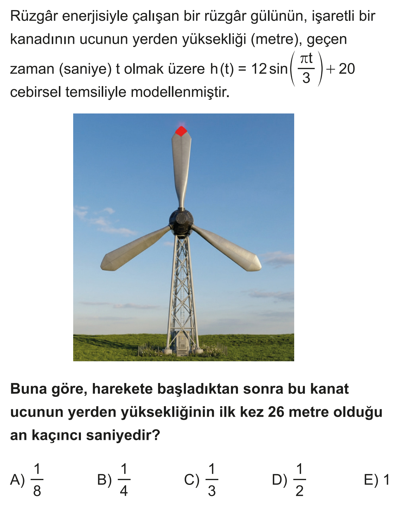
Çözüm
- $12\sin\frac{\pi t}{3} + 20 = 26$ → $\sin\frac{\pi t}{3} = \frac12$.
- İlk kez $\frac{\pi t}{3} = \frac{\pi}{6}$.
- $t = \frac12$ saniye.
Cevap: D
Soru 10Cevap: B
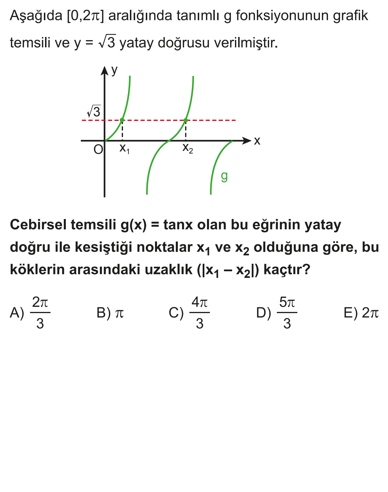
Çözüm
- $\tan x = \sqrt3$ → $x_1 = \frac{\pi}{3}$.
- Tanjantın periyodu $\pi$: $x_2 = \frac{\pi}{3} + \pi = \frac{4\pi}{3}$.
- $|x_1 - x_2| = \pi$.
Cevap: B
Soru 11Cevap: E
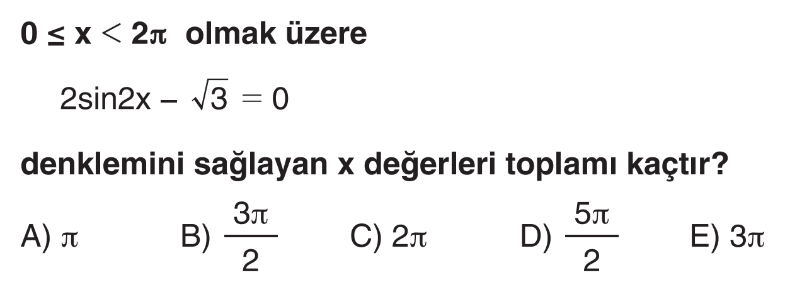
Çözüm
- $\sin2x = \frac{\sqrt3}{2}$, $2x\in[0,4\pi)$: $\frac{\pi}{3}, \frac{2\pi}{3}, \frac{7\pi}{3}, \frac{8\pi}{3}$.
- $x = \frac{\pi}{6}, \frac{\pi}{3}, \frac{7\pi}{6}, \frac{4\pi}{3}$.
- Toplam $\frac{\pi + 2\pi + 7\pi + 8\pi}{6} = 3\pi$.
Cevap: E
Soru 12Cevap: D
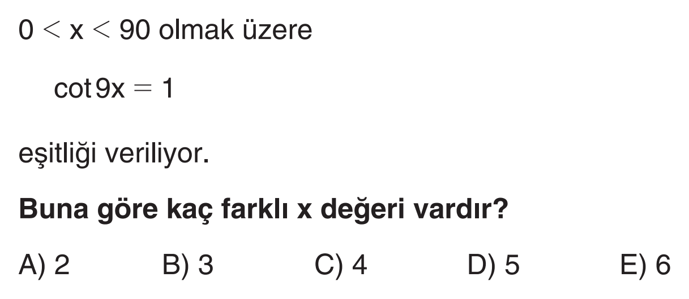
Çözüm
- $\cot9x = 1$ → $9x = 45^\circ + k\cdot180^\circ$ → $x = 5^\circ + k\cdot20^\circ$.
- $0 < x < 90^\circ$: $5^\circ, 25^\circ, 45^\circ, 65^\circ, 85^\circ$.
- 5 farklı değer.
Cevap: D
Soru 13Cevap: C
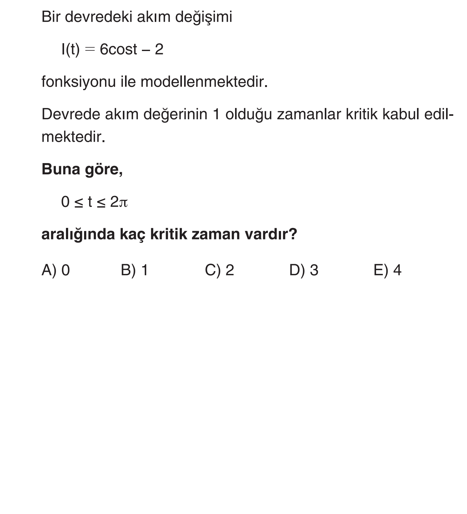
Çözüm
- $6\cos t - 2 = 1$ → $\cos t = \frac12$.
- $[0,2\pi]$'de $t = \frac{\pi}{3}$ ve $t = \frac{5\pi}{3}$.
- 2 kritik zaman.
Cevap: C
Soru 14Cevap: C
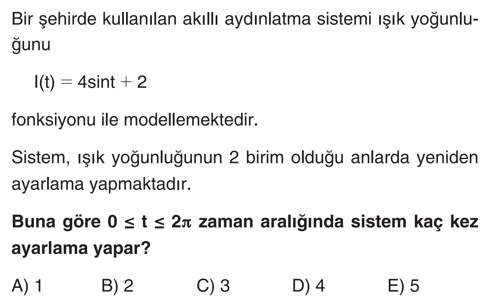
Çözüm
- $4\sin t + 2 = 2$ → $\sin t = 0$.
- $[0,2\pi]$'de $t = 0, \pi, 2\pi$.
- 3 kez ayarlama.
Cevap: C
Soru 15Cevap: C
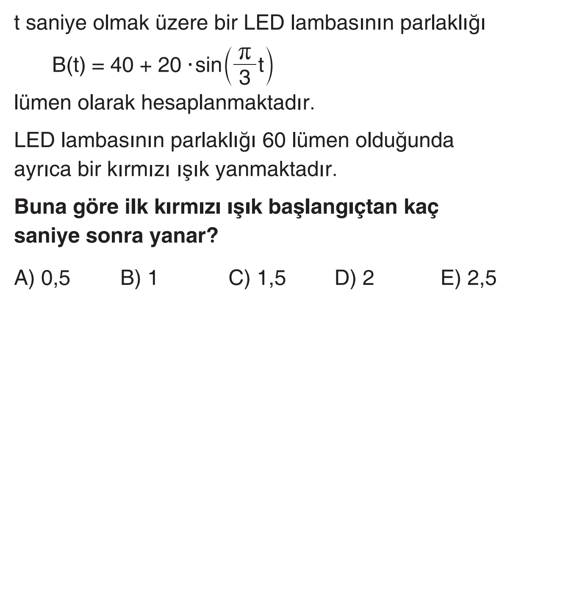
Çözüm
- $40 + 20\sin\frac{\pi t}{3} = 60$ → $\sin\frac{\pi t}{3} = 1$.
- İlk kez $\frac{\pi t}{3} = \frac{\pi}{2}$.
- $t = 1{,}5$ saniye.
Cevap: C
Soru 16Cevap: A
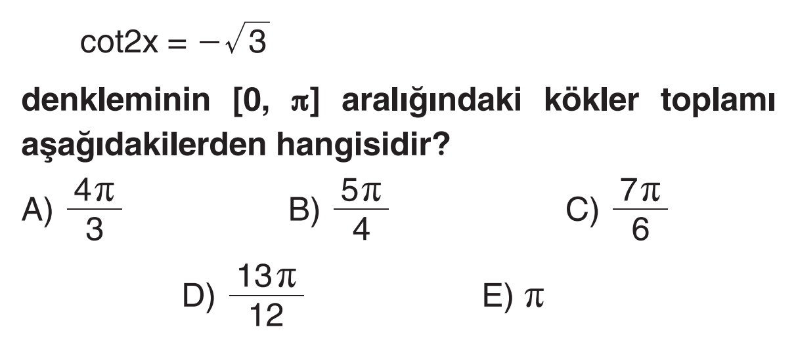
Çözüm
- $\cot2x = -\sqrt3$ → $2x = \frac{5\pi}{6} + k\pi$ → $x = \frac{5\pi}{12} + \frac{k\pi}{2}$.
- $[0,\pi]$'de $x = \frac{5\pi}{12}, \frac{11\pi}{12}$.
- Toplam $\frac{16\pi}{12} = \frac{4\pi}{3}$.
Cevap: A
Soru 17Cevap: B
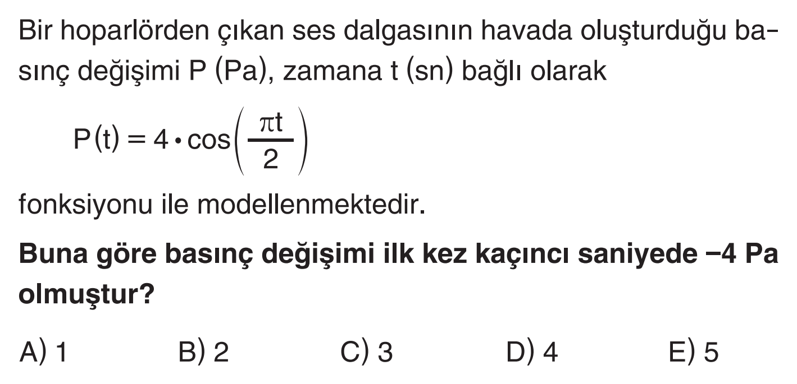
Çözüm
- $4\cos\frac{\pi t}{2} = -4$ → $\cos\frac{\pi t}{2} = -1$.
- İlk kez $\frac{\pi t}{2} = \pi$.
- $t = 2$ saniye.
Cevap: B
Soru 18Cevap: E
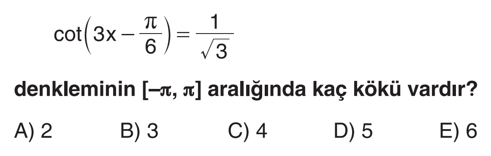
Çözüm
- $3x - \frac{\pi}{6} = \frac{\pi}{3} + k\pi$ → $x = \frac{\pi}{6} + \frac{k\pi}{3}$.
- $-\pi \le \frac{\pi}{6} + \frac{k\pi}{3} \le \pi$ → $-3{,}5 \le k \le 2{,}5$.
- $k = -3, …, 2$ → 6 kök.
Cevap: E
Soru 19Cevap: E
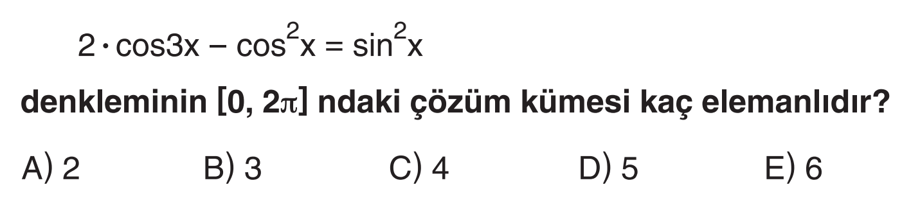
Çözüm
- $\cos^2x + \sin^2x = 1$ → $2\cos3x = 1$ → $\cos3x = \frac12$.
- $x\in[0,2\pi]$ ise $3x\in[0,6\pi]$: $\frac{\pi}{3}, \frac{5\pi}{3}, \frac{7\pi}{3}, \frac{11\pi}{3}, \frac{13\pi}{3}, \frac{17\pi}{3}$.
- 6 eleman.
Cevap: E
Soru 20Cevap: A
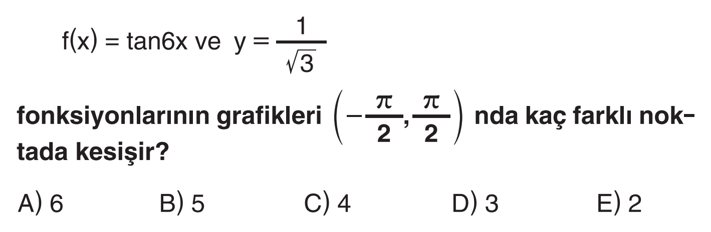
Çözüm
- $\tan6x = \frac{1}{\sqrt3}$ → $6x = \frac{\pi}{6} + k\pi$ → $x = \frac{\pi}{36} + \frac{k\pi}{6}$.
- $-\frac{\pi}{2} < x < \frac{\pi}{2}$ → $-3{,}17 < k < 2{,}83$.
- $k = -3, …, 2$ → 6 nokta.
Cevap: A